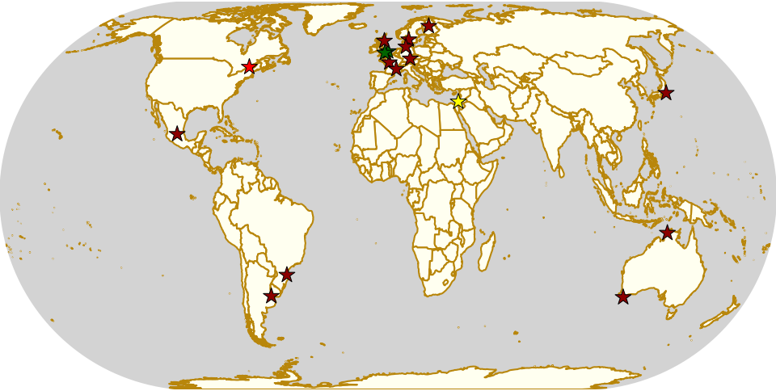

Weekend Highlights: 16 Nov 2019
This is another exceptionally busy weekend - once again, as we come to the end of the year, each weekend has multiple National Tournaments in it. In this case, the 2019 Mexican National Championships are in Querétaro, and the Brasilian Nationals are in Blumenau. (Plus, of course, this is the weekend of WFTDA's Championships). In addition, the ongoing Finnish and French tournament fixtures recur again this weekend...
... and there are big tournaments in Kiel, Regensburg, Cambridge, Wiltshire, and Buenos Aires!
[We'd also like to shout out the bout in Japan, for Yokosuka Sushi Rollers versus Kamikaze Badass, and also Tel Aviv Roller Derby's open scrim!]
This is busy enough that we're going to have a second, short, Sunday-only update later in the week so we can fit more geographical range in here.
(Plus, more that we've not got space to summarise up here, and you'll have to read down for!)
The rules are, as usual: highlights limited to 1 event per country, with an "extra" event allowed for a different kind of fixture (so, 1 tournament and 1 bootcamp), or if they involve Scottish leagues (since we are the Scottish Roller Derby Blog). Other notability might also allow the extra event - great posters, notable teams, etc. (League birthdays may count as "special" enough, at our discretion ;) )
In a bid to make this list as useful as possible, we've avoided links to Facebook except where noted. (Links to Teams are to non-Facebook resources - Instagram, or actual team pages - we'd strongly recommend that Teams get themselves an actual webpage [we can help host one if you need help]).
Locations are roughly organised East-West (with things before the weekend out sequence at the start).
Sat: Zushi, Japan
Yokosuka Sushi Rollers host single header of Japanese roller derby: the Sushi Rollers themselves (based out of the Ikego USF base) take on Tokyo's Kamikaze Badass! What's more, the intermission features' Yokosuka's Junior team, the Mochi Pounders, in a demonstration.
- Yokosuka Sushi Rollers versus Kamikaze Badass Roller Derby Tokyo
Event starts: 1700 Saturday
Venue: Ikego Bubble Gym, Ikego Housing, Zushi, Japan
Sat: Darwin, NT, Australia
Darwin Roller Girls host a Grease themed bout, at the height of Australian summer in the Northern Territory.
- T-Birds versus Pink Ladies (home team / exhibition)
Event starts: 1800 Saturday (doors open)
Venue: Marrara Stadium, Darwin, NT, Australia
Sat: Albany, WA, Australia
Albany Roller Derby League host an exciting event, as Team Indigenous Dreaming , representing the Indigenous peoples of Australia, Aotearoa, Fiji, Mauritius and Singapore (tied together mostly by Polynesian heritage). This is the first time Team Indigenous Dreaming have played in Western Australia.
- Albany Roller Derby League versus Team Indigenous Dreaming
Event starts: 1800 Saturday (doors open)
Venue: The Track Albany, Roundhay Street, Gledhow, WA, Australia
Sat: Tel Aviv, Israel
Tel Aviv Roller Derby host a public Scrimmage (or, equivalently, a home teams game).
- Team Black versus Team White? (scrimmage)
Event starts: 2000 Saturday
Venue: דה מודינה אריה 22, 66176 תל אביב-יפו, ישראל / Arye De Modena St 22, Tel Aviv, Israel
Sat-Sun: Oulu, Finland
[FACEBOOK LINK] [FTS LINK (Elite)] [FTS LINK (Division 1)]
Oulu Roller Derby host the next fixture in the Suomi Cup, as always, a triple header with both Elite and Division 1 bouts.
- Oulu Roller Derby versus Tampere Roller Derby [Elite]
- Howlin' Rolls (Tampere B) versus Riverdale Rollers (Ylivieska) [D1]
- Northern Rollers (Oulu/Rovaniemi B) versus C-Cassette (Helsinki C) [D1]
Event starts: 1130 Saturday (doors open)
Venue: Rajakylän koulu / Alakoulu, Ruiskukkatie 4-6, Oulu, Finland
Sat-Sun: Angered, Sweden
Gothenburg Roller Derby host a single header of Swedish Derby.
- Gothenburg Roller Derby versus The Royal Brigade (The Royal Swedish Roller Derby B | Stockholm)
Event starts: 1430 Saturday
Venue: Angered Arena, Högaffelsgatan 15, Angered, Västra Götalands Län, Sweden
Sat-Sun: Regensburg, Germany
Roller Derby Regensburg host a two-day tournament: the second Bavarian Battle! This is a 5 teams round-robin tournament, for teams from across Germany. All 10 round robin games will take place on the Saturday (as 30 minute, single period games). Sunday sees an Open To All genders mixed game, followed by 3rd and 1sr place WFTDA-regulation playoffs (between teams seeded by the round robin).
- Teams:
- Rolling Thunder (Augsburg)
- Municorns (Munich B)
- Munich Dynamite (Munich A)
- Sucker Punch (Nuremberg)
- Rolling Rat Pack (Regensburg)
No FTS link as the bouts can't be known before the end of Saturday
Event starts: 1030 Saturday
Venue: Clermont-Ferrand-Schule, Clermont-Ferrand-Allee 23, 93049 Regensburg, Germany
Sat-Sun: Kiel, Germany
Rollerderby Kiel also host a 5 team round robin, but MRDA-gender and international, as the other derby tournament called November Pain returns for a second year. These are full length bouts, for a total of 20 hours of scheduled derby over the weekend!
- Teams:
- DHR Roller Derby (Kiel + Aarhus M)
- Killer Apes from Outer Space (Norrköping M)
- Gothenburg Salty Seamen
- Helsinki Coast Quads
- MadRiders (Madrid M)
- Tampere Rollin Bros
Event starts: 1000 Saturday (first whistle)
Venue: Stralsundhalle, Winterbeker Weg 47, Kiel, Germany
Sat-Sun: Tours & Aubenas, France
[FACEBOOK LINK (Tours)] [FACEBOOK LINK (Aubenas)] [FTS LINK (Nationale 2)]
Roller Derby Tours and Criminal Nurses Roller Derby host the two Championnat de France Nationale 2 (Zones 7 & 8) fixtures this weekend. As always, both fixtures are across Saturday and Sunday, and contribute 5 to 7 games to their Zone.
- Tours (Zone 7) games:
- La Douleur Angevine (Angers) versus Les Roches Voisines (La Roche sur Yon)
- Les Petites Morts (Bordeaux) versus Les Silly Geez (Tours)
- Les Puces'Hell (Orléans) versus Les Porcelain Damage (Limoges/Angoulême)
- Les Silly Geez versus Les Roches Voisines
- Les Petites Morts versus Les Porcelain Damage
- Aubenas (Zone 8) games:
- Rabbit Skulls (Avignon) versus Red Valentines Revenge (Valence)
- Les Amazones (Aix en Provence) versus Sisters In Arms (Gap)
- Cannibal Marmots Beeee (Grenoble B) versus Criminal Nurses (Aubenas)
- Baywitch Project (Nice) versus Sisters In Arms
- Rabbit Skulls versus Cannibal Marmots Beee
- Criminal Nurses versus Baywitch Project
- Les Amazones versus Red Valentines Revenge
Event starts: 1200 Saturday & 1000 Saturday
Venue: Arche du Lude, 6 Rue Mariotte, 37300 Joué-lès-Tours & Gymnase Intercommunale, Montpezat sous Bauzon, France
Sat-Sun: Cambridge, UK
Cambridge Rollerbillies host one of two Roller Derby Sevens tournaments for WFTDA B teams in the UK this Saturday! No details are available on the format for this tournament, although with 5 hours, it would be possible to have a round robin with the 5 teams so far announced.
- Teams (to date)
- Suffolk Roller Derby Bees
- Roller Derby Leicester Jackals
- Railtown Loco Rollers Railtown Derailers (Crewe)
- Oxford Roller Derby Blackbirds
- Borderland Brawlers Roller Derby (Peterborough/Stamford/Oakham)
Event starts: 1300? Saturday
Venue: Kelsey Kerridge Sports Centre, Queen Anne Terrace, CB1 1NA Cambridge, Cambridgeshire
Sat-Sun: Aberdeen, Scotland
[FACEBOOK LINK] [FTS LINK 1] [FTS LINK 2] [FTS LINK 3]
Granite City Brawlers host an exciting triple header of Roller Derby, as they host Kent Men's Roller Derby and North Wales Roller Derby for a round robin!
- Granite City Brawlers (Aberdeen M) versus North Wales Roller Derby (Flint M)
- Kent Men's Roller Derby versus North Wales Roller Derby
- Granite City Brawlers versus Kent Men's Roller Derby
Event starts: 1145 Saturday (doors open)
Venue: Beach Leisure Centre, Beach Leisure Centre, Esplanade, Sea Beach, Aberdeen, Scotland
Sat: Swindon, UK
Wiltshire Roller Derby host a Charity Roller Derby Sevens tournament, with two divisions (an Open To All genders tournament, and a WFTDA-gender policy tournament for B-level teams). Each division is a 4 team round robin, for a total of 12 games across both divisions.
- WFTDA-B division:
- Bath
- Bristol
- "My Mom"
- Wiltshire
- OTA division:
- Bristol
- Dorset
- Furness (Barrow-in-Furness)
- Wiltshire
Event starts: 1000 Saturday
Venue: Oasis Leisure Centre, Swindon, UK
Fri-Sun: Blumenau, Brazil
The Iron Ladies host the 8th Brasileirão de Roller Derby, Brazil's effective National Tournament. We wrote a little about this here , but didn't include the full schedule, which we reproduce below.
- Friday:
- Iron Ladies (Blumenau) versus Blue Jay Rollers (Curitiba)
- No-contact WFTDA-gender bout
- Avas Roller Derby (Rio de Janeiro) versus Gray City Rebels (São Paulo)
- Saturday:
- Iron Ladies versus Gray City Rebels
- Blue Jay Rollers versus Avas Roller Derby
- Open-To-All genders bout
- Sunday:
- Iron Ladies versus Avas Roller Derby
- Blue Jay Rollers versus Gray City Rebels
Event starts: 1300 Friday (doors open)
Venue: EEB Professorß João Widemann, Rua 4 de Fevereiro, 64 - Itoupava Norte, Blumenau, Brazil
Sat-Mon: Buenos Aires, Argentina
Sailor City Rollers host the 7th! edition of Piratas en el Asfalto, their annual Argentine B/C level tournament. This year, the tournament runs as two divisions, a B-level and a C-level contest. This year, for the first time, Uruguay's Tempestad Roller Derby are competing, building on the development in derby in Montevideo this past year.
- "B" teams
- Alianza Rebelde (La Plata)
- Buenos Aires Roller Derby
- Compass Rose Roller Derby ("the Argentine interior", composite tengamos)
- Tsunami Bombs (Sailor City B | Buenos Aires)
- [final team??]
- "C" teams
- Fulanitas Roller Derby Team (fusion of Desalmadas [AvelLaneda], Colmena [Escalada] and Rebel West [Castelar])
- Kamikazes Roller Derby (Berazategui)
- Sea Monsters (Sailor City C)
- Tempestad Roller Derby (Montevideo, Uruguay)
Event starts: 0900 Saturday
Venue: Deán Funes 1368, Buenos Aires, Argentina
Sat-Mon: Querétaro, Mexico
Rock City Roller Derby host the Asociación Mexicana de Roller Derby National Tournament Championships for this year, with both the MRDA-gender and WFTDA-gender Division 1 Champions decided over 3 days. Both tiers play a single-elimination tournament with 6 teams; losers of the first two games play for 5th in addition.
We wrote an intro to this season of the tournament here . Since then, our predictions have been fairly accurate: Baja Roller Derby have performed a bit better than expected, thanks to their WFTDA Sanctioned games across the border in the USA, but the top of the field is still very much up for contest.
This event will be livestreamed [by Derby Wife], and covered live by Hit Squad TV.
- MRDA-gender initial games
- All Blacks (Mexico City M) versus Wheels of Mayhem (Mexicali M)
- Crows (Querétaro M) versus Team Bastardo (San Luis Potosí M)
- Disorder RD (EMEXRD M | Mexico City) versus Winner G1
- Minotauros (LRDCM M | Mexico City ) versus Winner G2
- WFTDA-gender initial games
- Baja Roller Derby (Ensenada) versus Discordias (EMEXRD | Mexico City)
- Rock City Roller Derby (Querétaro) versus Minervas (Guadalajara)
- Mexico City Roller Derby versus Winner G1
- All-Star Juárez versus Winner G2
Event starts: 0900 Saturday
Venue: Auditorio de ciencias naturales, UAQ Campus juriquilla, Querétaro, Mexico
Also of interest, due to their attendees:
Fri-Sun: Montréal, Quebec, Canada
Montreal Roller Derby host the WFTDA Championships , of interest to us due to the participation of Victorian Roller Derby League, representing Australia, and 2x4 Roller Derby, representing Argentina for the first time. We believe that this is the first time since 2012 that no European teams have been in the WFTDA Championships - but it's also a great moment for Latin America, who are represented for the first time.
As always, WFTDA Champs is a single-elimination tournament with consolation games.
Also important at this event is the hosted Exhibition Game: "WE ARE NATION" , featuring two borderless nations, Jewish Roller Derby (רולר דרבי יהודי) and Team Indigenous Roller Derby playing to support the cause of borderless nations and marginalized groups across the world. This will be one of the free games streamed on WFTDA.TV.
- Initial games:
- Texas Rollergirls (Austin) versus Philly Roller Derby (Philadelphia)
- Montréal Roller Derby versus 2x4 Roller Derby (Buenos Aires)
- Denver Roller Derby versus Arch Rival Roller Derby (St Louis)
- Angel City Derby (Los Angeles) versus Victorian Roller Derby League (Preston, VIC)
- Rose City Rollers (Portland) versus Winner G1
- Gotham Girls Roller Derby (New York) versus Winner G2
Event starts: 1000 Friday
Venue: Complexe sportif Claude-Robillard, 1000 Émile Journault, Montreal, Quebec, Canada